Dataset, Project, DICOM Layers
Dataset
In our software, the primary data structure is the Dataset. Users can create multiple Datasets, each containing data that may be identical but is treated independently. Dataset is a basic unit in our software. All of the data operation must be done inside a dataset. 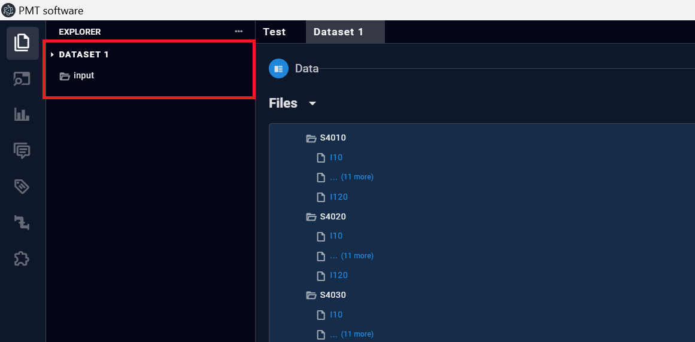
Project
Within each Dataset, there are Projects. Users can divide their data into various Projects by using our special feature called Split & Merge, which enables users to divide their data into different Projects while ensuring the data remains valid and complete for each patient. This feauture allows user for flexible organization and management of their work over time. 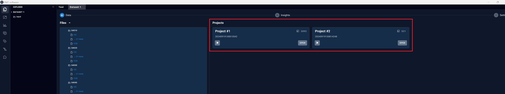
DICOM Layers
All input DICOM files are efficiently parsed. Utilizing the DICOM standard, it extracts and interprets the tag values within each file. Based on these values, the software organizes and displays the DICOM files in a hierarchical tree structure. This structure is as follows:
- Patient: The top level, representing individual patients.
- Study: Each patient can have multiple studies, representing different imaging sessions.
- Series: Within each study, there can be multiple series, representing different sets of images or modalities.
- Instance: The lowest level, representing individual images or instances within a series.
All in all, our layer architecture extended the DICOM standard into:
Dataset - Project - Study - Series - Instance
The input of our software is "scratch data sets" and the final output is high-quality "datasets".
Read Raw Data From Hard Drive
Features of Raw Data
Our software takes Raw Medical Image Data as one of the input. Raw Medical Image Data is actually DICOM data from scratch, that is defined as DICOM file inside arbitrary folder structure. In general, a folder contains DICOM files may have the following invariance: - folder structure - file format - folder / file name Those invariance may be caused by difference Archive System. But more generally it is due to user's personal preference.
The first step of our software is to remove those invarance and prepare DICOMs into a consistent storage structure.
Pre-Parsing
Create Dataset
The Create Dataset button allows users to create a new dataset. Upon selecting this option, users can provide a name and description for the newly created dataset. By default, the name “Dataset N” will be assigned, where “N” starts from 1. The description is optional and can be left empty, but the name is required.
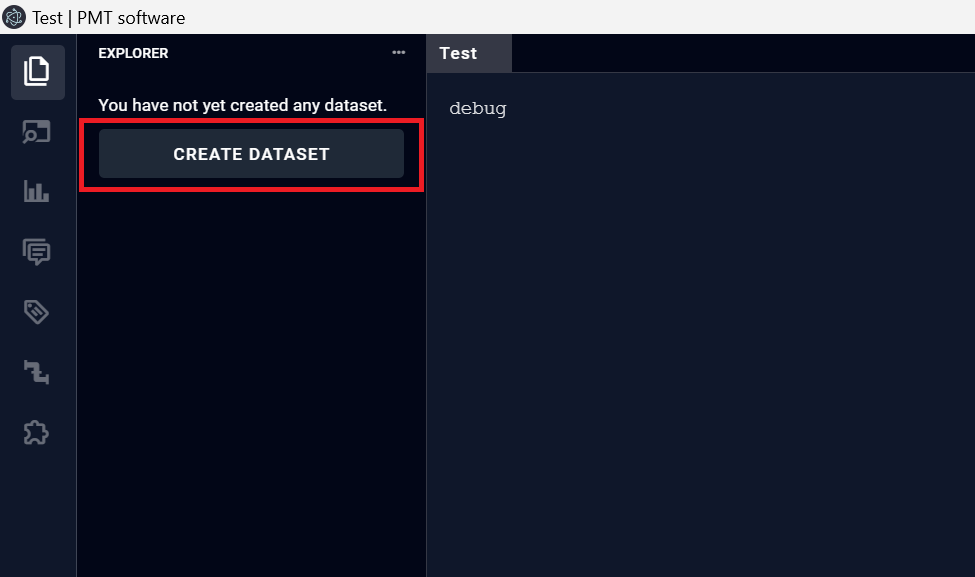 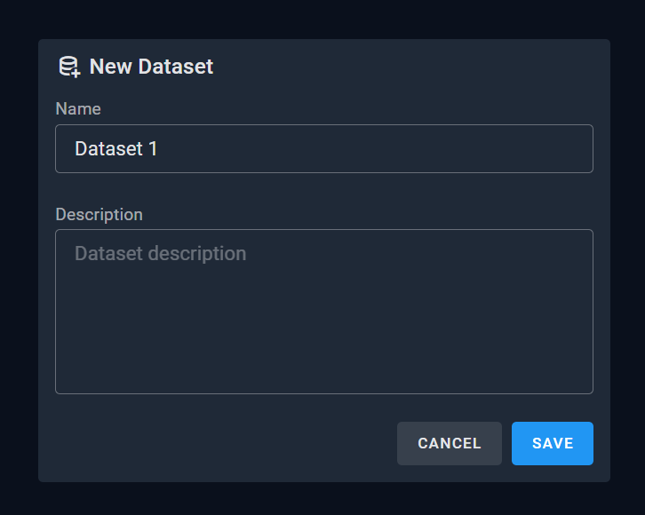
Update Dataset
The Update Dataset button enables users to modify the name and description of an existing dataset.
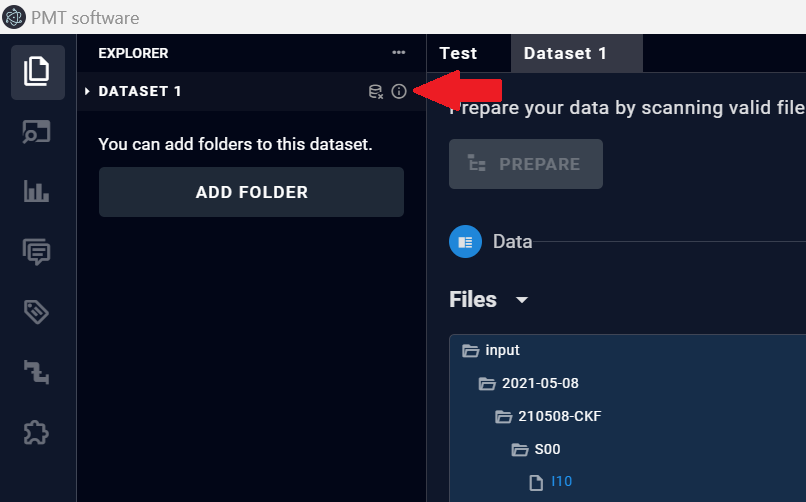 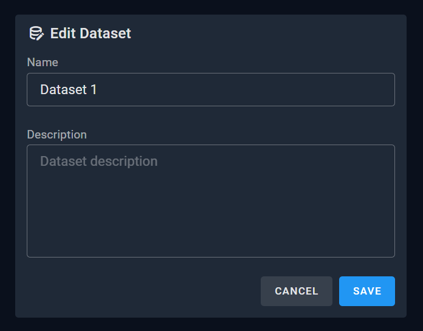
Delete Dataset
To delete a dataset, press the Delete button. After clicking, you will need to re-type the name of the dataset to confirm the deletion. This step ensures that the user truly intends to delete the dataset. 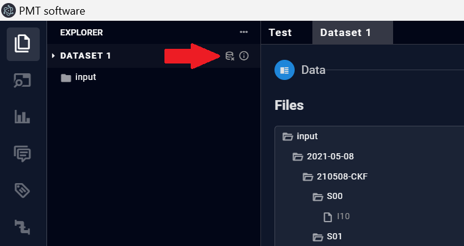 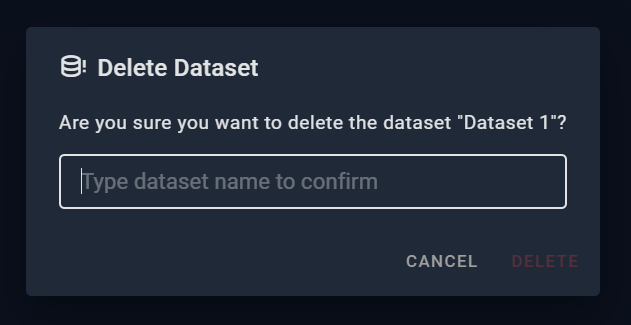
Add Roots
The Add Folder button allows users to add a root folder for the input data. Users can add as many root folders as they want under each dataset, but the data will remain independent for each dataset. 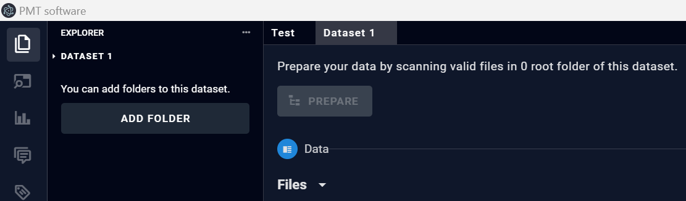 Once users add root folders to a dataset, all the DICOM files will be displayed in a real path tree-like structure under the Files dialog. If there are multiple files in the same folder, the folder will be collapsed by default, and users can click on it to view more details. 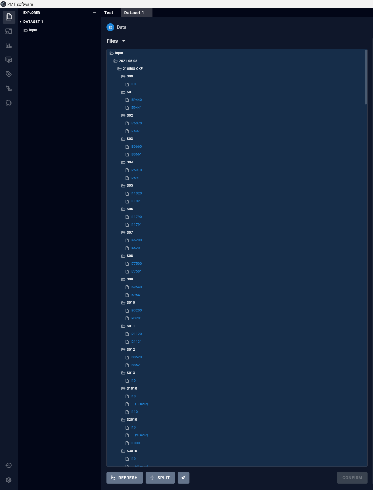
Observe File Status
Additionally, each file listed will have a status indicated by different colors, such as new, deleted, parsed, etc. The Refresh button allows users to update the files included in a dataset. If the input data has been updated, refreshing will be necessary to include the latest data. The corresponding file status will be updated as well.
Project Split
Auto split
The Split button allows the software to automatically suggest splits for a large dataset. It analyzes the dataset and recommend the number of splits. If the dataset contains minimal data, the suggested number of splits will be one, indicating that no splitting is needed. 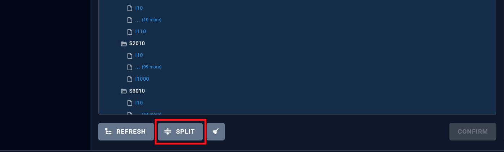 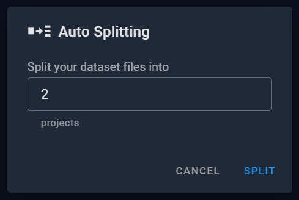
Manual Split
After receiving the suggestion, users need to confirm the number of splits they want. Users can also adjust the number of splits if more are needed.
Adjustment
Also, after clicking the Split button, a yellowish splitting line will appear under the Files dialog. This line indicates how the split is performed, showing which files are divided into which project. Users can click on this splitting line and use the up and down arrow keys to adjust the split. 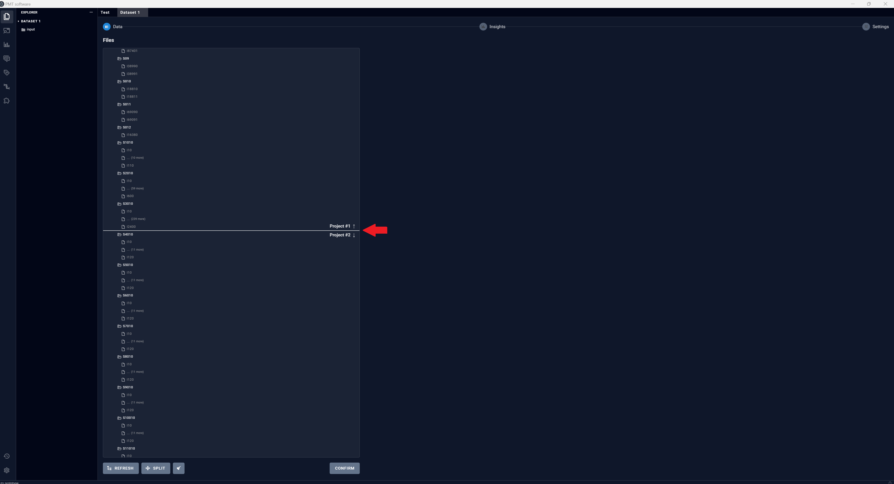
Confirmation
Once satisfied, users can click the Confirm button to finalize the splitting. Note that once confirmed, this action cannot be undone. Before clicking Confirm, users can click the Split button again to re-run the auto split suggestion. Once Confirmed button is clicked, correponding projects will be created. 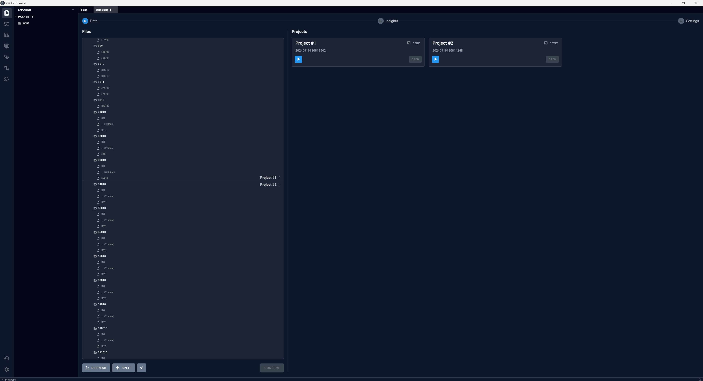
Parsing
Parsing involves reading the tags of a DICOM file and providing an organized, standardized DICOM layer for all files.
Parse
After confirming the split, a small right triangle appears in each generated project. This Parse button enables users to parse the data within the project. When clicked, it reads and processes the tag values in each DICOM file, creating an organized tree view structure that complies with the previously defined DICOM layers. 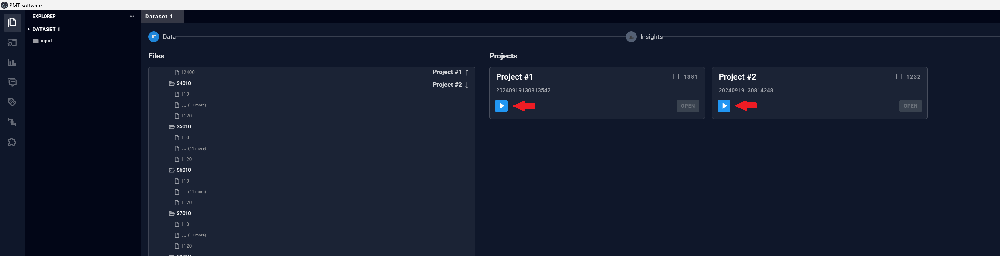
Open Parse Result
After parsing the project, you can click the Open button to be redirected to the project details page. This page initially displays the Patient section, listing all patients identified from the DICOM files within the project. By double-clicking a patient, you can view their corresponding studies. Double-clicking a study will take you to the series data for that study. Further double-clicking a series will reveal all instance files within it, with corresponding DICOM file thumbnails displayed at the bottom of the screen. 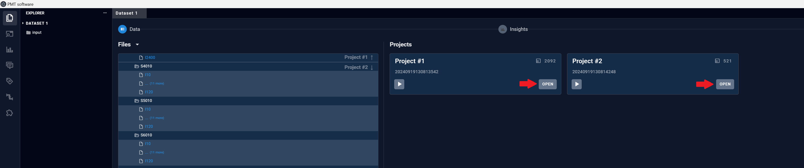 Patient page: 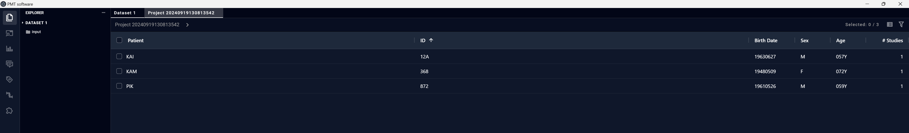 Study page: 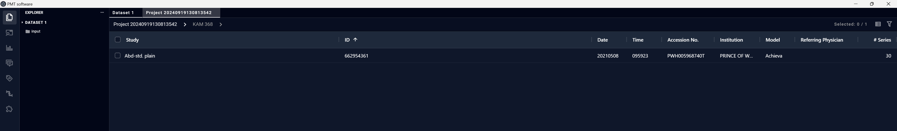 Series page: 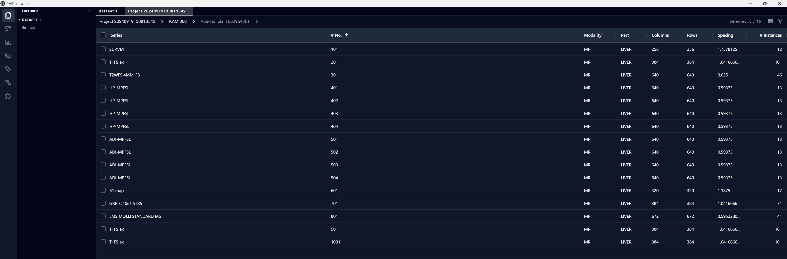 Instance page: 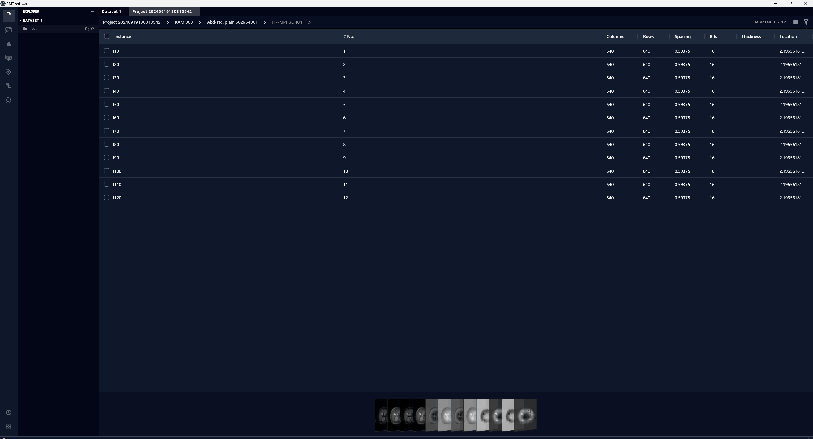
Merge
Since we have applied the Split feature to manage large datasets, some DICOM files may be split into different projects. During the parsing process, the system will relocate these files to a project where the patient already exists. This ensures that the same patient does not appear in different projects within the same dataset. As a result, users will notice that the number of files in the project is updated each time it is parsed. Before parsing: 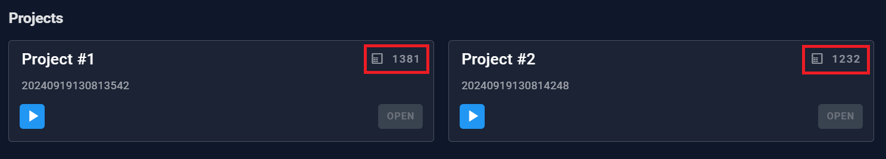 After parsing: 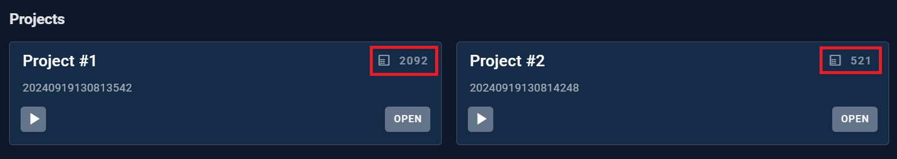
Data Retrieval
Data Retrieval allows users to search data across all datasets and projects within the system. Users can specify the DICOM layer they are interested in, limited to Patient, Study, and Series layers, as the Instance layer is not available. Several tags, such as Modality and Series Time, can be used as criteria for series-level data retrieval. 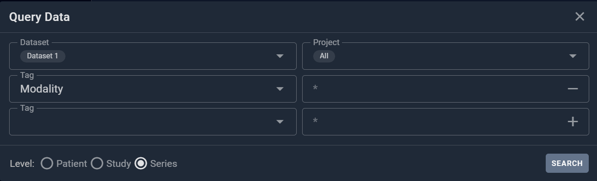
After clicking the Search button, the results will be displayed as a list. By clicking on any result, you can expand it to view more details about that DICOM layer. Additionally, related DICOM thumbnails will be shown below. 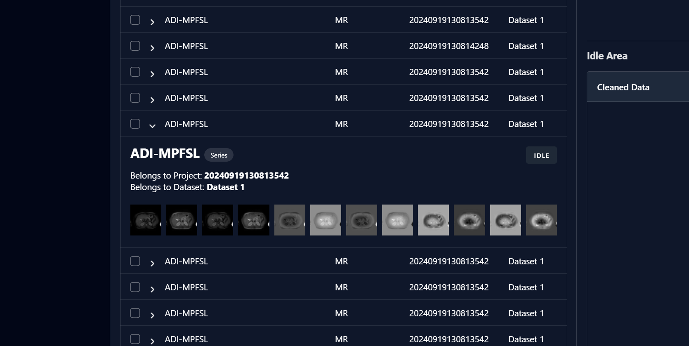
Plug-ins
Post-processing algorithms can be applied to each DICOM layer as a role of plug-ins. There two types of post-processing algorithms in our software. One is Firmware plug-in which is in-built by our software which cannot be add or remove manually. The other one is Customized plug-in which let user create either directly by themselves or download from our user community.
Firmware Functions
Current fireware functions include our patented comprehensive de-identification algorithms. De-identification alogrithms, which anonymize DICOM data via fully eliminates personal information, contains three scopes: - DICOM tag de-identification - OCR de-identification - Head de-identification
Customized Functions
Function such as quantitative calculation of MRI. Automatic segmentation algorithm. To be done later...
Deploy Deep Learning Model
To be done later...
Pipeline
To be done later...